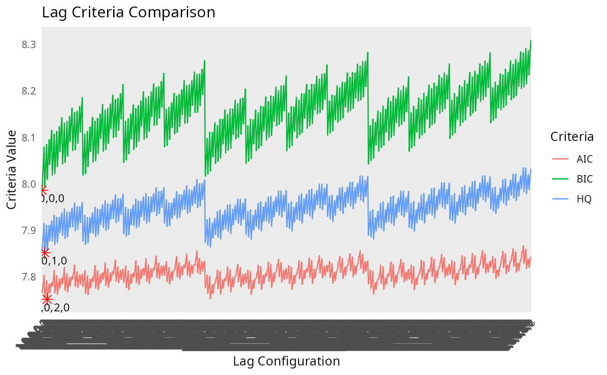
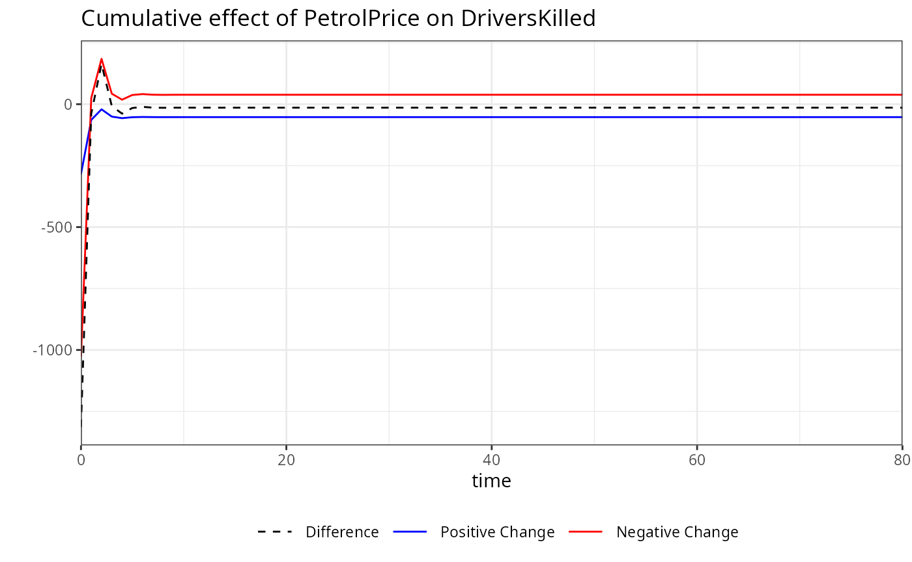
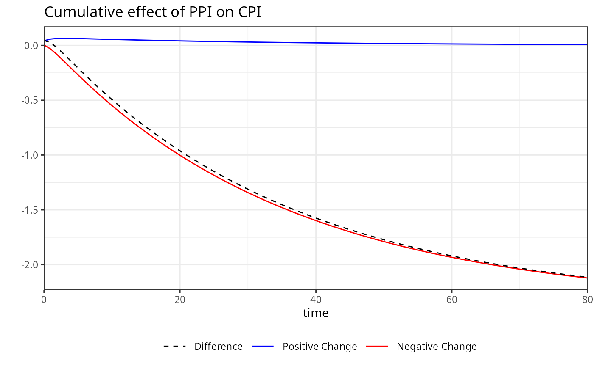
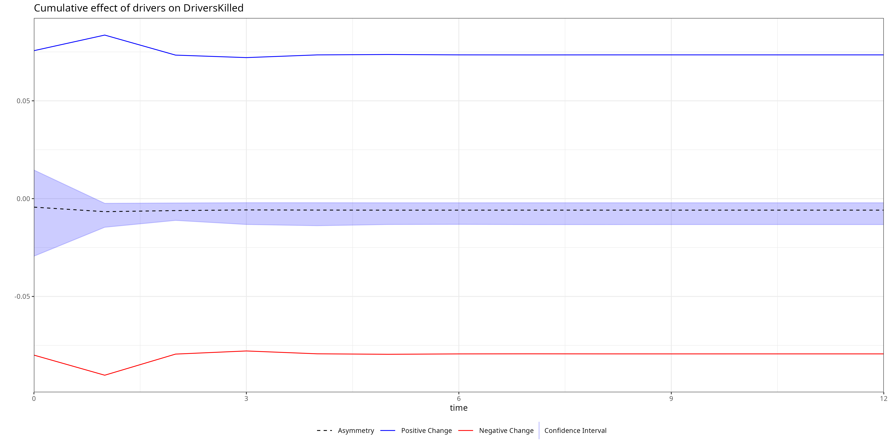

Introduction to kardl
Huseyin Karamelikli and Huseyin Utku Demir
2026-04-24
intro.RmdIntroduction
The kardl package is an R tool for estimating symmetric
and asymmetric Autoregressive Distributed Lag (ARDL) and Nonlinear ARDL
(NARDL) models, designed for econometricians and researchers analyzing
cointegration and dynamic relationships in time series data. It offers
flexible model specifications, allowing users to include deterministic
variables, asymmetric effects for short- and long-run dynamics, and
trend components. The package supports customizable lag structures,
model selection criteria (AIC, BIC, AICc, HQ), and parallel processing
for computational efficiency. Key features include:
-
Flexible Formula Specification: Use
Asymmetric(),Lasymmetric(), andSasymmetric()to model asymmetric effects in short- and long-run dynamics, anddeterministic()for dummy variables. -
Lag Optimization: Choose between automatic lag
selection (
"quick","grid","grid_custom") or user-defined lags. - Dynamic Analysis: Compute long-run coefficients, perform cointegration tests (PSS F, PSS t, Narayan), and ECM estimation.
This vignette demonstrates how to use the kardl()
function to estimate an asymmetric ARDL model, perform diagnostic tests,
and visualize results, using economic data from Turkey.
Installation
kardl in R can easily be installed from its CRAN
repository:
install.packages("kardl")
library(kardl)Alternatively, you can use the devtools package to load
directly from GitHub:
# Install required packages
install.packages(c("stats", "msm", "lmtest", "nlWaldTest", "car", "strucchange", "utils","ggplot2"))
# Install kardl from GitHub
install.packages("devtools")
devtools::install_github("karamelikli/kardl")Load the package:
library(kardl)Estimating an Asymmetric ARDL Model
This example estimates an asymmetric ARDL model to analyze the
dynamics of exchange rate pass-through to domestic prices in Turkey,
using a sample dataset (imf_example_data) with variables
for Consumer Price Index (CPI), Exchange Rate (ER), Producer Price Index
(PPI), and a COVID-19 dummy variable.
Step 1: Data Preparation
Assume imf_example_data contains monthly data for CPI,
ER, PPI, and a COVID dummy variable. We prepare the data by ensuring
proper formatting and adding the dummy variable. We retrieve data from
the IMF’s International Financial Statistics (IFS) dataset and prepare
it for analysis.
Note: The imf_example_data is a placeholder for
demonstration purposes. You should replace it with your actual dataset.
The data can be loaded by readxl or other data import
functions.
Step 2: Define the Model Formula
We define the model formula using R’s formula syntax, incorporating
asymmetric effects and deterministic variables. We use
asymmetric() for variables with both short- and long-run
asymmetry, Lasymmetric() for long-run asymmetry,
Sasymmetric() for short-run asymmetry, and
deterministic() for fixed dummy variables. The
trend term includes a linear time trend in the model.
# Define the model formula
MyFormula <- CPI ~ ER + PPI + asymmetric(ER + PPI) + deterministic(covid) + trendIndeed, the formula syntax is flexible, allowing for various combinations of asymmetric and deterministic variables. The following variations of the formula are equivalent and will yield the same model specification:
sameFormula <- y ~Asymmetric(x1)+Sasymmetric(x2+x3)+Lasymmetric(x4+x5) + Deterministic(dummy1) + trend
sameFormula <- y ~asymmetric(x1)+Sasymmetric(x2+x3)+Lasymmetric(x4+x5) + deterministic(dummy1) + trend
sameFormula <- y ~asym(x1)+sasym(x2+x3)+lasym(x4+x5) + det(dummy1) + trend
sameFormula <- y ~a(x1)+s(x2+x3)+l(x4+x5) + d(dummy1) + trendStep 3: Model Estimation
We estimate the ARDL model using different mode settings
to demonstrate flexibility in lag selection. The kardl()
function supports various modes: "grid",
"grid_custom", "quick", or a user-defined lag
vector.
Using mode = "grid"
The "grid" mode evaluates all lag combinations up to
maxlag and provides console feedback.
# Set model options
kardl_set(criterion = "BIC", differentAsymLag = TRUE, data=imf_example_data)
# Estimate model with grid mode
kardl_model <- kardl(data=imf_example_data,formula= MyFormula, maxlag = 4, mode = "grid")
# View results
kardl_model## Optimal lags for each variable ( BIC ):
## CPI: 1, ER_POS: 1, ER_NEG: 0, PPI_POS: 3, PPI_NEG: 0
##
## Call:
## L0.d.CPI ~ L1.CPI + L1.ER_POS + L1.ER_NEG + L1.PPI_POS + L1.PPI_NEG +
## L1.d.CPI + L0.d.ER_POS + L1.d.ER_POS + L0.d.ER_NEG + L0.d.PPI_POS +
## L1.d.PPI_POS + L2.d.PPI_POS + L3.d.PPI_POS + L0.d.PPI_NEG +
## covid + trend
##
## Coefficients:
## (Intercept) L1.CPI L1.ER_POS L1.ER_NEG L1.PPI_POS
## -0.0386634 -0.0121524 0.0110491 0.0252653 0.0517031
## L1.PPI_NEG L1.d.CPI L0.d.ER_POS L1.d.ER_POS L0.d.ER_NEG
## 0.0451043 0.3340367 0.1111220 0.0937503 -0.0026591
## L0.d.PPI_POS L1.d.PPI_POS L2.d.PPI_POS L3.d.PPI_POS L0.d.PPI_NEG
## 0.0474102 0.0021468 -0.0519928 -0.0517409 0.0057550
## covid trend
## 0.0033275 -0.0002952Summary of the model provides detailed information about the estimated coefficients, standard errors, t-values, and significance levels.
# Display model summary
summary(kardl_model)##
## Call:
## L0.d.CPI ~ L1.CPI + L1.ER_POS + L1.ER_NEG + L1.PPI_POS + L1.PPI_NEG +
## L1.d.CPI + L0.d.ER_POS + L1.d.ER_POS + L0.d.ER_NEG + L0.d.PPI_POS +
## L1.d.PPI_POS + L2.d.PPI_POS + L3.d.PPI_POS + L0.d.PPI_NEG +
## covid + trend
##
## Residuals:
## Min 1Q Median 3Q Max
## -0.050478 -0.008129 -0.000904 0.006918 0.102836
##
## Coefficients:
## Estimate Std. Error t value Pr(>|t|)
## (Intercept) -0.0386634 0.0227251 -1.701 0.089572 .
## L1.CPI -0.0121524 0.0047287 -2.570 0.010494 *
## L1.ER_POS 0.0110491 0.0051559 2.143 0.032652 *
## L1.ER_NEG 0.0252653 0.0079538 3.177 0.001594 **
## L1.PPI_POS 0.0517031 0.0096244 5.372 1.25e-07 ***
## L1.PPI_NEG 0.0451043 0.0107631 4.191 3.35e-05 ***
## L1.d.CPI 0.3340367 0.0399191 8.368 7.54e-16 ***
## L0.d.ER_POS 0.1111220 0.0180412 6.159 1.63e-09 ***
## L1.d.ER_POS 0.0937503 0.0181990 5.151 3.88e-07 ***
## L0.d.ER_NEG -0.0026591 0.0474028 -0.056 0.955291
## L0.d.PPI_POS 0.0474102 0.0160401 2.956 0.003284 **
## L1.d.PPI_POS 0.0021468 0.0144158 0.149 0.881684
## L2.d.PPI_POS -0.0519928 0.0143424 -3.625 0.000322 ***
## L3.d.PPI_POS -0.0517409 0.0137160 -3.772 0.000183 ***
## L0.d.PPI_NEG 0.0057550 0.0135155 0.426 0.670452
## covid 0.0033275 0.0050899 0.654 0.513621
## trend -0.0002952 0.0002472 -1.194 0.233112
## ---
## Signif. codes: 0 '***' 0.001 '**' 0.01 '*' 0.05 '.' 0.1 ' ' 1
##
## Residual standard error: 0.01483 on 448 degrees of freedom
## (5 observations deleted due to missingness)
## Multiple R-squared: 0.6516, Adjusted R-squared: 0.6392
## F-statistic: 52.38 on 16 and 448 DF, p-value: < 2.2e-16Using User-Defined Lags
Specify custom lags to bypass automatic lag selection:
kardl_model2 <- kardl(data=imf_example_data, MyFormula, mode = c(2, 1, 1, 3, 0))
# View results
kardl_model2$lagInfo## $OptLag
## CPI ER_POS ER_NEG PPI_POS PPI_NEG
## 2 1 1 3 0
# Display model summary
summary(kardl_model2)##
## Call:
## L0.d.CPI ~ L1.CPI + L1.ER_POS + L1.ER_NEG + L1.PPI_POS + L1.PPI_NEG +
## L1.d.CPI + L2.d.CPI + L0.d.ER_POS + L1.d.ER_POS + L0.d.ER_NEG +
## L1.d.ER_NEG + L0.d.PPI_POS + L1.d.PPI_POS + L2.d.PPI_POS +
## L3.d.PPI_POS + L0.d.PPI_NEG + covid + trend
##
## Residuals:
## Min 1Q Median 3Q Max
## -0.054516 -0.008329 -0.001178 0.006787 0.104278
##
## Coefficients:
## Estimate Std. Error t value Pr(>|t|)
## (Intercept) -0.0382834 0.0226694 -1.689 0.091962 .
## L1.CPI -0.0123942 0.0047187 -2.627 0.008921 **
## L1.ER_POS 0.0110505 0.0051609 2.141 0.032798 *
## L1.ER_NEG 0.0268623 0.0080054 3.356 0.000860 ***
## L1.PPI_POS 0.0532642 0.0096979 5.492 6.67e-08 ***
## L1.PPI_NEG 0.0452663 0.0107751 4.201 3.21e-05 ***
## L1.d.CPI 0.3750078 0.0444934 8.428 4.88e-16 ***
## L2.d.CPI -0.0865443 0.0423947 -2.041 0.041800 *
## L0.d.ER_POS 0.1119077 0.0179998 6.217 1.16e-09 ***
## L1.d.ER_POS 0.0889105 0.0189930 4.681 3.79e-06 ***
## L0.d.ER_NEG -0.0051813 0.0476798 -0.109 0.913515
## L1.d.ER_NEG 0.0047909 0.0475913 0.101 0.919860
## L0.d.PPI_POS 0.0487238 0.0160447 3.037 0.002532 **
## L1.d.PPI_POS -0.0010288 0.0144643 -0.071 0.943329
## L2.d.PPI_POS -0.0544024 0.0143719 -3.785 0.000174 ***
## L3.d.PPI_POS -0.0499891 0.0137240 -3.642 0.000302 ***
## L0.d.PPI_NEG 0.0056668 0.0134844 0.420 0.674505
## covid 0.0031412 0.0050898 0.617 0.537448
## trend -0.0003309 0.0002472 -1.338 0.181531
## ---
## Signif. codes: 0 '***' 0.001 '**' 0.01 '*' 0.05 '.' 0.1 ' ' 1
##
## Residual standard error: 0.01479 on 446 degrees of freedom
## (5 observations deleted due to missingness)
## Multiple R-squared: 0.655, Adjusted R-squared: 0.641
## F-statistic: 47.03 on 18 and 446 DF, p-value: < 2.2e-16Using All Variables
Use the . operator to include all variables except the
dependent variable:
## Optimal lags for each variable ( BIC ):
## CPI: 1, ER: 1, PPI: 1
##
## Call:
## L0.d.CPI ~ L1.CPI + L1.ER + L1.PPI + L1.d.CPI + L0.d.ER + L1.d.ER +
## L0.d.PPI + L1.d.PPI + covid
##
## Coefficients:
## (Intercept) L1.CPI L1.ER L1.PPI L1.d.CPI L0.d.ER
## 0.0721925 -0.0151379 0.0156144 -0.0017714 0.4453614 0.0995449
## L1.d.ER L0.d.PPI L1.d.PPI covid
## 0.0871452 0.0058383 0.0238530 0.0008534Visualizing Lag Criteria
The LagCriteria component contains lag combinations and
their criterion values. We visualize these to compare model selection
criteria (AIC, BIC, HQ).
library(dplyr)
library(tidyr)
library(ggplot2)
# Convert LagCriteria to a data frame
LagCriteria <- as.data.frame(kardl_model$lagInfo$LagCriteria)
colnames(LagCriteria) <- c("lag", "AIC", "BIC", "AICc", "HQ")
LagCriteria <- LagCriteria %>% mutate(across(c(AIC, BIC, HQ), as.numeric))
# Pivot to long format
LagCriteria_long <- LagCriteria %>%
select(-AICc) %>%
pivot_longer(cols = c(AIC, BIC, HQ), names_to = "Criteria", values_to = "Value")
# Find minimum values
min_values <- LagCriteria_long %>%
group_by(Criteria) %>%
slice_min(order_by = Value) %>%
ungroup()
# Plot
ggplot(LagCriteria_long, aes(x = lag, y = Value, color = Criteria, group = Criteria)) +
geom_line() +
geom_point(data = min_values, aes(x = lag, y = Value), color = "red", size = 3, shape = 8) +
geom_text(data = min_values, aes(x = lag, y = Value, label = lag), vjust = 1.5, color = "black", size = 3.5) +
labs(title = "Lag Criteria Comparison", x = "Lag Configuration", y = "Criteria Value") +
theme_minimal() +
theme(axis.text.x = element_text(angle = 45, hjust = 1))
Error Correction Model (ECM) Estimation
The ecm() function estimates a Restricted ECM for
cointegration testing. We specify the same formula and lag structure as
in the ARDL model.
ecm_model <- ecm(data=imf_example_data, formula = MyFormula, maxlag = 4, mode = "grid_custom")
# View results
summary(ecm_model)##
## Call:
## lm(formula = shortrunEQ, data = EcmData)
##
## Residuals:
## Min 1Q Median 3Q Max
## -0.069034 -0.008966 -0.000360 0.007383 0.098004
##
## Coefficients:
## Estimate Std. Error t value Pr(>|t|)
## (Intercept) 1.840e-02 2.767e-03 6.650 8.50e-11 ***
## EcmRes -7.988e-03 4.168e-03 -1.916 0.055947 .
## L1.d.CPI 4.566e-01 3.738e-02 12.217 < 2e-16 ***
## L0.d.ER_POS 1.237e-01 1.863e-02 6.643 8.86e-11 ***
## L1.d.ER_POS 9.888e-02 1.895e-02 5.218 2.76e-07 ***
## L0.d.ER_NEG 4.782e-02 4.861e-02 0.984 0.325705
## L0.d.PPI_POS 1.974e-02 1.524e-02 1.296 0.195793
## L1.d.PPI_POS 2.079e-02 1.461e-02 1.423 0.155302
## L2.d.PPI_POS -3.840e-02 1.460e-02 -2.631 0.008815 **
## L3.d.PPI_POS -3.676e-02 1.403e-02 -2.620 0.009085 **
## L0.d.PPI_NEG -6.570e-04 1.387e-02 -0.047 0.962248
## covid 1.182e-02 3.231e-03 3.657 0.000285 ***
## trend -4.622e-05 7.953e-06 -5.812 1.17e-08 ***
## ---
## Signif. codes: 0 '***' 0.001 '**' 0.01 '*' 0.05 '.' 0.1 ' ' 1
##
## Residual standard error: 0.0156 on 452 degrees of freedom
## Multiple R-squared: 0.611, Adjusted R-squared: 0.6007
## F-statistic: 59.16 on 12 and 452 DF, p-value: < 2.2e-16Step 4: Long-Run Coefficients
We calculate long-run coefficients using
kardl_longrun(), which standardizes coefficients by
dividing them by the negative of the dependent variable’s long-run
parameter.
# Long-run coefficients
mylong <- kardl_longrun(kardl_model)
mylong##
## Call:
## kardl_longrun(model = kardl_model)
##
## Coefficients:
## L1.ER_POS L1.ER_NEG L1.PPI_POS L1.PPI_NEG
## 0.9092 2.0790 4.2545 3.7115The summary() function provides detailed information
about the long-run coefficients, including standard errors, t-values,
and significance levels.
# Summary of long-run coefficients
summary(mylong)##
## Call:
## kardl_longrun(model = kardl_model)
##
## Estimation type:
## Long-run multipliers
##
## Coefficients:
## Estimate Std. Error t value Pr(>|t|)
## L1.ER_POS 0.90921 0.20834 4.3640 1.587e-05 ***
## L1.ER_NEG 2.07904 0.56693 3.6672 0.0002747 ***
## L1.PPI_POS 4.25455 1.72822 2.4618 0.0141998 *
## L1.PPI_NEG 3.71155 1.33518 2.7798 0.0056681 **
## ---
## Signif. codes: 0 '***' 0.001 '**' 0.01 '*' 0.05 '.' 0.1 ' ' 1
##
## Note:
## Coefficients, standard errors, t-statistics and p-values are reliably estimated.
## Fitted values and residuals are NOT centered (E(u) ≠ 0 by design) → diagnostic plots and residual-based tests are invalid.Step 5: Asymmetry Test
The symmetrytest() function performs Wald tests to
assess short- and long-run asymmetry in the model.
ast <- imf_example_data %>% kardl(CPI ~ ER + PPI + asymmetric(ER + PPI) + deterministic(covid) + trend, mode = c(1, 2, 3, 0, 1)) %>% symmetrytest()
ast##
## Symmetry Test Results - Long-run:
## =======================
## Df Sum of Sq Mean Sq F value Pr(>F)
## ER 1 0.00049756 0.00049756 2.1649 0.1419
## PPI 1 0.00016439 0.00016439 0.7153 0.3982
##
## Symmetry Test Results - Short-run:
## =======================
## Df Sum of Sq Mean Sq F value Pr(>F)
## ER 1 0.00038607 0.00038607 1.6798 0.1956
## PPI 1 0.00017426 0.00017426 0.7582 0.3844Summary of the symmetry test provides detailed results for both long-run and short-run asymmetry tests, including F-values, p-values, hypotheses, and test decisions.
# Summary of symmetry test
summary(ast)## Long-run symmetry tests:
##
## Test for variable: ER
## F statistic: 2.164906, p-value: 0.1418984
## Test Decision: Fail to Reject H0 at 5% level. Indicating long-run symmetry for variable ER.
## Hypotheses:
## H0: - Coef(L1.ER_POS)/Coef(L1.CPI) = - Coef(L1.ER_NEG)/Coef(L1.CPI)
## H1: - Coef(L1.ER_POS)/Coef(L1.CPI) ≠ - Coef(L1.ER_NEG)/Coef(L1.CPI)
##
## Test for variable: PPI
## F statistic: 0.7152717, p-value: 0.3981528
## Test Decision: Fail to Reject H0 at 5% level. Indicating long-run symmetry for variable PPI.
## Hypotheses:
## H0: - Coef(L1.PPI_POS)/Coef(L1.CPI) = - Coef(L1.PPI_NEG)/Coef(L1.CPI)
## H1: - Coef(L1.PPI_POS)/Coef(L1.CPI) ≠ - Coef(L1.PPI_NEG)/Coef(L1.CPI)
##
##
## _____________________________
## Short-run symmetry tests:
##
## Test for variable: ER
## F statistic: 1.679811 , p-value: 0.1956198
## Test Decision: Fail to Reject H0 at 5% level. Indicating short-run symmetry for variable ER.
## Hypotheses:
## H0: Coef(L0.d.ER_POS) + Coef(L1.d.ER_POS) + Coef(L2.d.ER_POS) = Coef(L0.d.ER_NEG) + Coef(L1.d.ER_NEG) + Coef(L2.d.ER_NEG) + Coef(L3.d.ER_NEG)
## H1: Coef(L0.d.ER_POS) + Coef(L1.d.ER_POS) + Coef(L2.d.ER_POS) ≠ Coef(L0.d.ER_NEG) + Coef(L1.d.ER_NEG) + Coef(L2.d.ER_NEG) + Coef(L3.d.ER_NEG)
##
## Test for variable: PPI
## F statistic: 0.7582018 , p-value: 0.3843603
## Test Decision: Fail to Reject H0 at 5% level. Indicating short-run symmetry for variable PPI.
## Hypotheses:
## H0: Coef(L0.d.PPI_POS) = Coef(L0.d.PPI_NEG) + Coef(L1.d.PPI_NEG)
## H1: Coef(L0.d.PPI_POS) ≠ Coef(L0.d.PPI_NEG) + Coef(L1.d.PPI_NEG)Step 6: Cointegration Tests
We perform cointegration tests to assess long-term relationships
using pssf(), psst(), and
narayan().
PSS F Bound Test
The pssf() function tests for cointegration using the
Pesaran, Shin, and Smith F Bound test.
##
## Pesaran-Shin-Smith (PSS) Bounds F-test for cointegration
##
## data: model
## F = 11.271
## alternative hypothesis: Cointegrating relationship existsSummary of the PSS F Bound test provides detailed information about the test statistic, critical values, hypotheses, and decision regarding cointegration.
summary(A)## Pesaran-Shin-Smith (PSS) Bounds F-test for cointegration
## F = 11.27056
## k = 4
##
## Hypotheses:
## H0: Coef(L1.CPI) = Coef(L1.ER_POS) = Coef(L1.ER_NEG) = Coef(L1.PPI_POS) = Coef(L1.PPI_NEG) = 0
## H1: Coef(L1.CPI) ≠ Coef(L1.ER_POS) ≠ Coef(L1.ER_NEG) ≠ Coef(L1.PPI_POS) ≠ Coef(L1.PPI_NEG)≠ 0
##
## Test Decision: Reject H0 → Cointegration (at 5% level)
##
## Critical Values (Case V ):
## L U
## 0.10 3.03 4.06
## 0.05 3.47 4.57
## 0.025 3.89 5.07
## 0.01 4.40 5.72
##
## Notes:
## • Trend detected in the model. Case automatically adjusted to 5 (unrestricted intercept and trend).PSS t Bound Test
The psst() function tests the significance of the lagged
dependent variable’s coefficient.
##
## Pesaran-Shin-Smith (PSS) Bounds t-test for cointegration
##
## data: model
## t = -2.5699
## alternative hypothesis: Cointegrating relationship existsSummary of the PSS t Bound test provides detailed information about the test statistic, critical values, hypotheses, and decision regarding cointegration.
summary(A)## Pesaran-Shin-Smith (PSS) Bounds t-test for cointegration
## t = -2.569932
## k = 4
##
## Hypotheses:
## H0: Coef(L1.CPI) = 0
## H1: Coef(L1.CPI)≠ 0
##
## Test Decision: Reject H0 → Cointegration (at 5% level)
##
## Critical Values (Case V ):
## L U
## 0.10 -3.13 -4.04
## 0.05 -3.41 -4.36
## 0.025 -3.65 -4.62
## 0.01 -3.96 -4.96
##
## Notes:
## • Trend detected in the model. Case automatically adjusted to 5 (unrestricted intercept and trend).Narayan Test
The narayan() function is tailored for small sample
sizes. It tests for cointegration using critical values optimized for
small samples.
##
## Narayan F Test for Cointegration
##
## data: model
## F = 11.271
## alternative hypothesis: Cointegrating relationship existsSummary of the Narayan test provides detailed information about the test statistic, critical values, hypotheses, and decision regarding cointegration.
summary(A)## Narayan F Test for Cointegration
## F = 11.27056
## k = 4
##
## Hypotheses:
## H0: Coef(L1.CPI) = Coef(L1.ER_POS) = Coef(L1.ER_NEG) = Coef(L1.PPI_POS) = Coef(L1.PPI_NEG) = 0
## H1: Coef(L1.CPI) ≠ Coef(L1.ER_POS) ≠ Coef(L1.ER_NEG) ≠ Coef(L1.PPI_POS) ≠ Coef(L1.PPI_NEG)≠ 0
##
## Test Decision: Reject H0 → Cointegration (at 5% level)
##
## Critical Values (Case V ):
## L U
## 0.10 3.160 4.230
## 0.05 3.678 4.840
## 0.01 4.890 6.164
##
## Notes:
## • The Narayan F-test is designed for small samples. Your model uses only 469 observations. For greater accuracy with large samples, consider pssf() function.
## • Trend detected in the model. Case automatically adjusted to 5 (unrestricted intercept and trend).
## • The number of observations exceeds the maximum limit for the critical values table. Using the critical values for 80 observations.Step 7: Dynamic Multipliers
The mplier() function calculates dynamic multipliers for
the model, showing how changes in independent variables affect the
dependent variable over time.
## h ER_POS ER_NEG ER_dif PPI_POS PPI_NEG PPI_dif
## [1,] 0 0.1111220 0.002659096 0.1137811 0.04741019 -0.005755012 0.04165518
## [2,] 1 0.2516899 -0.021750322 0.2299396 0.11652070 -0.052711765 0.06380893
## [3,] 2 0.3066352 -0.054904985 0.2517302 0.13790041 -0.112860775 0.02503964
## [4,] 3 0.3323117 -0.090577971 0.2417337 0.14332835 -0.176685526 -0.03335717
## [5,] 4 0.3478993 -0.126658657 0.2212406 0.19510280 -0.240962483 -0.04585969
## [6,] 5 0.3599274 -0.162437060 0.1974903 0.26172949 -0.304609373 -0.04287988
# View long-run multipliers
head(multipliers$omega)## [1] 1.3218843 -0.3340367
# View short-run multipliers
head(multipliers$lambda)## ER_POS ER_NEG PPI_POS PPI_NEG
## [1,] 0.111122028 -0.002659096 0.0474101941 0.005755012
## [2,] -0.006322597 0.027924436 0.0064397124 0.039349293
## [3,] -0.093750322 0.000000000 -0.0541396294 0.000000000
## [4,] 0.000000000 0.000000000 0.0002518809 0.000000000
## [5,] 0.000000000 0.000000000 0.0517409420 0.000000000
## [6,] 0.000000000 0.000000000 0.0000000000 0.000000000Plotting dynamic multipliers for specific variables can be done using
the plot() function, which visualizes the response of the
dependent variable to changes in independent variables over time.


To handle a large number of variables, you can specify a subset of
variables to plot or use variables = "all" to visualize all
dynamic multipliers.
Bootstrap confidence intervals for dynamic multipliers can be
calculated using the bootstrap() function, which provides
robust estimates of uncertainty around the multipliers.
bootstrap_results <- kardl_model %>% bootstrap(horizon = 12, replications= 10)
# View bootstrap summary
summary(bootstrap_results)## Summary of Dynamic Multipliers
## Horizon: 12
##
## h ER_POS ER_NEG ER_dif
## Min. : 0 Min. :0.1111 Min. :-0.396247 Min. :0.0315
## 1st Qu.: 3 1st Qu.:0.3323 1st Qu.:-0.299717 1st Qu.:0.1004
## Median : 6 Median :0.3706 Median :-0.197680 Median :0.1484
## Mean : 6 Mean :0.3467 Mean :-0.195624 Mean :0.1511
## 3rd Qu.: 9 3rd Qu.:0.4001 3rd Qu.:-0.090578 3rd Qu.:0.2212
## Max. :12 Max. :0.4277 Max. : 0.002659 Max. :0.2517
## PPI_POS PPI_NEG PPI_dif ER_CI_upper
## Min. :0.04741 Min. :-0.720251 Min. :-0.045860 Min. :0.1558
## 1st Qu.:0.14333 1st Qu.:-0.548660 1st Qu.:-0.033357 1st Qu.:0.2040
## Median :0.33251 Median :-0.367272 Median :-0.004707 Median :0.2388
## Mean :0.36104 Mean :-0.362996 Mean :-0.001957 Mean :0.2449
## 3rd Qu.:0.54395 3rd Qu.:-0.176686 3rd Qu.: 0.024956 3rd Qu.:0.2941
## Max. :0.74521 Max. :-0.005755 Max. : 0.063809 Max. :0.3333
## ER_CI_lower PPI_CI_upper PPI_CI_lower
## Min. :-0.13109 Min. :0.02179 Min. :-0.19412
## 1st Qu.:-0.02293 1st Qu.:0.04069 1st Qu.:-0.19122
## Median : 0.05582 Median :0.07289 Median :-0.18770
## Mean : 0.05608 Mean :0.06884 Mean :-0.14912
## 3rd Qu.: 0.15745 3rd Qu.:0.09263 3rd Qu.:-0.16366
## Max. : 0.19002 Max. :0.11741 Max. : 0.01085Vşsualize bootstrap results for specific variables to understand the variability and confidence intervals of the dynamic multipliers.
plot(bootstrap_results, variables = "ER")
Step 8: Customizing Asymmetric Variables
We demonstrate how to customize prefixes and suffixes for asymmetric
variables using kardl_set().
# Set custom prefixes and suffixes
kardl_reset()
kardl_set(AsymPrefix = c("asyP_", "asyN_"), AsymSuffix = c("_PP", "_NN"))
kardl_custom <- kardl(data=imf_example_data, MyFormula)
kardl_custom## Optimal lags for each variable ( AIC ):
## CPI: 2, asyP_ER_PP: 1, asyN_ER_NN: 0, asyP_PPI_PP: 4, asyN_PPI_NN: 0
##
## Call:
## L0.d.CPI ~ L1.CPI + L1.asyP_ER_PP + L1.asyN_ER_NN + L1.asyP_PPI_PP +
## L1.asyN_PPI_NN + L1.d.CPI + L2.d.CPI + L0.d.asyP_ER_PP +
## L1.d.asyP_ER_PP + L0.d.asyN_ER_NN + L0.d.asyP_PPI_PP + L1.d.asyP_PPI_PP +
## L2.d.asyP_PPI_PP + L3.d.asyP_PPI_PP + L4.d.asyP_PPI_PP +
## L0.d.asyN_PPI_NN + covid + trend
##
## Coefficients:
## (Intercept) L1.CPI L1.asyP_ER_PP L1.asyN_ER_NN
## -0.0404958 -0.0128695 0.0120635 0.0258122
## L1.asyP_PPI_PP L1.asyN_PPI_NN L1.d.CPI L2.d.CPI
## 0.0511977 0.0433195 0.3830822 -0.0920420
## L0.d.asyP_ER_PP L1.d.asyP_ER_PP L0.d.asyN_ER_NN L0.d.asyP_PPI_PP
## 0.1122301 0.0880910 -0.0017889 0.0509193
## L1.d.asyP_PPI_PP L2.d.asyP_PPI_PP L3.d.asyP_PPI_PP L4.d.asyP_PPI_PP
## 0.0003349 -0.0535510 -0.0435529 0.0118365
## L0.d.asyN_PPI_NN covid trend
## -0.0011170 0.0026926 -0.0003479Key Functions and Parameters
-
kardl(data, model, maxlag, mode, ...):-
data: A time series dataset (e.g., a data frame with CPI, ER, PPI). -
formula: A formula specifying the long-run equation, e.g.,y ~ x + z + asymmetric(z) + Lasymmetric(x2 + x3) + Sasymmetric(x3 + x4) + deterministic(dummy1 + dummy2) + trend. Supports:-
asymmetric(): Asymmetric effects for both short- and long-run dynamics. -
Lasymmetric(): Long-run asymmetric variables. -
Sasymmetric(): Short-run asymmetric variables. -
deterministic(): Fixed dummy variables. -
trend: Linear time trend.
-
-
maxlag: Maximum number of lags (default: 4). Use smaller values (e.g., 2) for small datasets, larger values (e.g., 8) for long-term dependencies. -
mode: Estimation mode:-
"quick": Verbose output for interactive use. -
"grid": Verbose output with lag optimization. -
"grid_custom": Silent, efficient execution. - User-defined vector (e.g.,
c(1, 2, 4, 5)orc(CPI = 2, ER_POS = 3, ER_NEG = 1, PPI = 3)).
-
- Returns a list with components:
inputs,finalModel,start_time,end_time,properLag,TimeSpan,OptLag,LagCriteria,type(“kardlmodel”).
-
kardl_set(...): Configures options likecriterion(AIC, BIC, AICc, HQ),differentAsymLag,AsymPrefix,Sasymuffix,ShortCoef, andLongCoef. Usekardl_get()to retrieve settings andkardl_reset()to restore defaults.kardl_longrun(model): Calculates standardized long-run coefficients, returningtype(“kardl_longrun”),coef,delta_se,results, andstarsDesc.symmetrytest(model): Performs Wald tests for short- and long-run asymmetry, returningLhypotheses,Lwald,Shypotheses,Swald, andtype(“symmetrytest”).pssf(model, case, signif_level): Performs the Pesaran, Shin, and Smith F Bound test for cointegration, supporting cases 1–5 and significance levels (“auto”, 0.01, 0.025, 0.05, 0.1, 0.10).psst(model, case, signif_level): Performs the PSS t Bound test, focusing on the lagged dependent variable’s coefficient.narayan(model, case, signif_level): Conducts the Narayan test for cointegration, optimized for small samples (cases 2–5).ecm(data, model, maxlag, mode, ...): Conducts the Restricted ECM test for cointegration, with similar parameters tokardl()and case/significance level options.
For detailed documentation, use ?kardl,
?kardl_set, ?kardl_longrun,
?symmetrytest, ?pssf, ?psst,
?narayan, or ?ecm.
Conclusion
The kardl package is a versatile tool for econometric
analysis, offering robust support for symmetric and asymmetric
ARDL/NARDL modeling, cointegration tests, stability diagnostics, and
heteroskedasticity checks. Its flexible formula specification, lag
optimization, and support for parallel processing make it ideal for
studying complex economic relationships. For more information, visit https://github.com/karamelikli/kardl
or contact the authors at hakperest@gmail.com.